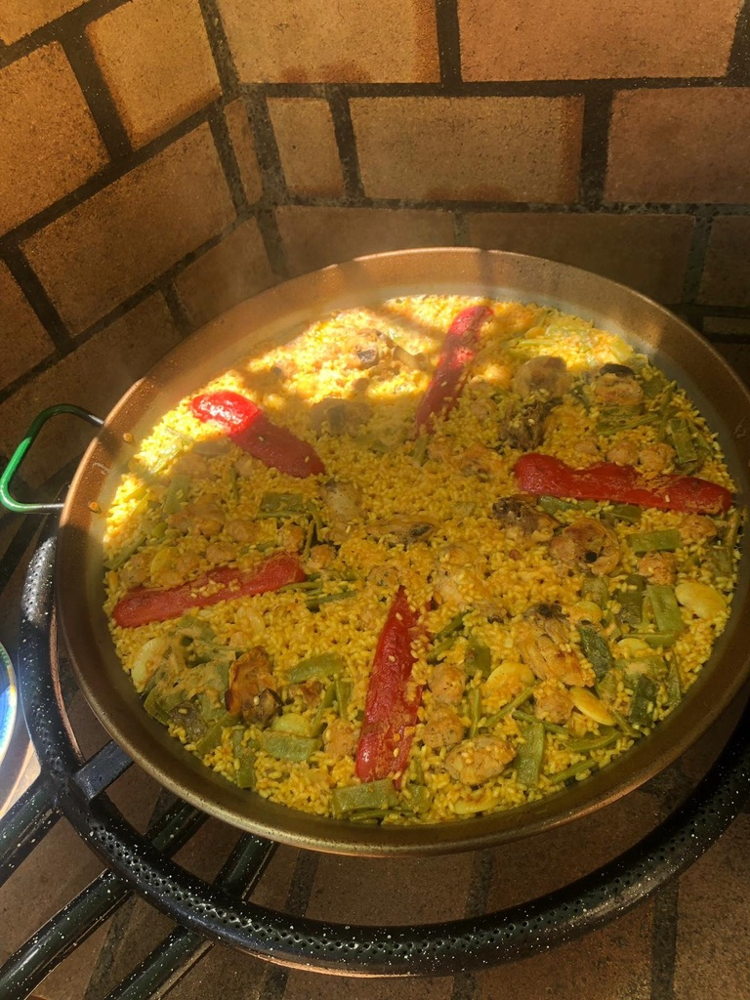
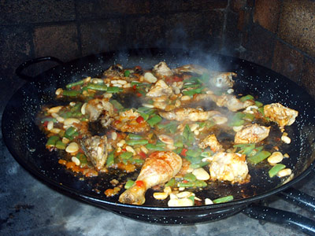
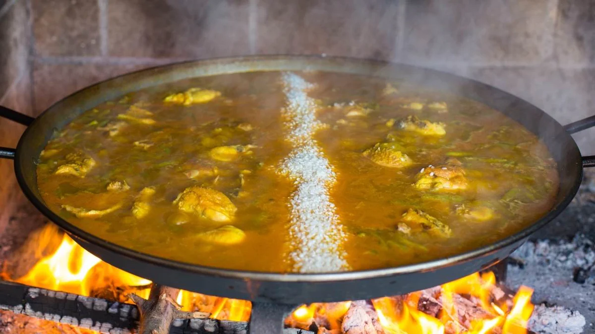

Paella Valenciana
Ingredients for 8 portions:
- 800 gr. rice (preferably bomba rice)
- 500 gr. chicken (60 gr. approx. per person)
- 12 "mandonguilles" (pork magret, egg, breadcrumbs, salt, parsley)
- 200 gr. cleaned "Tavella" (white beans)
- 200 gr. cleaned "Garrofó" (flat white beans)
- 200 gr. "Ferradura" (flat green beans)
- 1 large ripe tomato, grated
- 1 tbsp. sweet paprika
- Saffran
- Food coulouring
- Salt
- 100 gr. red pepper
- 100 ml. extra virgin olive oil
- Water (4 times for every part of rice)
Instructions:
With the paella pan on a low heat, pour oil and add a little salt. When the oil is hot, fry the chicken until golden brown.
Add the cleaned, chopped and shelled vegetables, until well cooked. Remove the red pepper when it is well cooked. Add the grated tomato and fry all the ingredients together.
Pour the water over the mark left by the handles of the paella, during this time add the saffron, colouring and salt. Add a sprig of rosemary (to taste), which is removed before the water begins to boil. The mandonguilles are then added at this stage.
Leave to boil for at least 10 minutes, making sure that the water level is not too low. Then add the rice well distributed and check the intensity of the heat.
Finally, gradually reduce the heat to check that the rice is cooked. In the final step, reduce the heat to obtain the much-appreciated "socarrat", a layer of roasted rice at the bottom of the pan. Finally add the red pepper to decorate and leave to cool for 5 minutes before serving and that's it!

Enjoy this delicious Paella La Ribera Alta style!